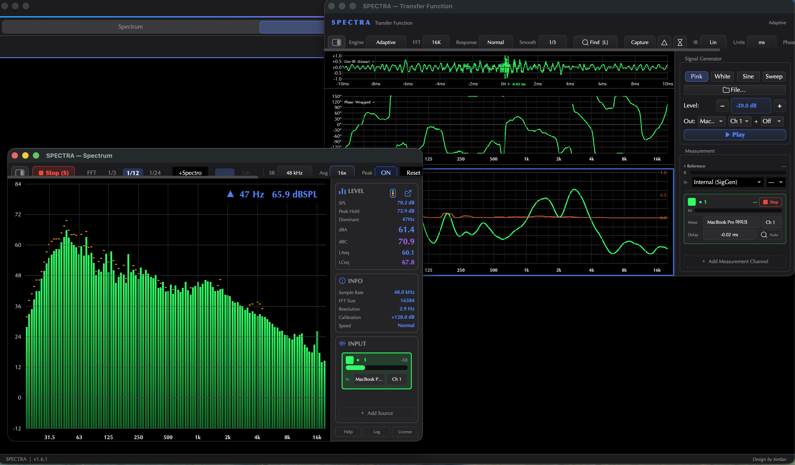
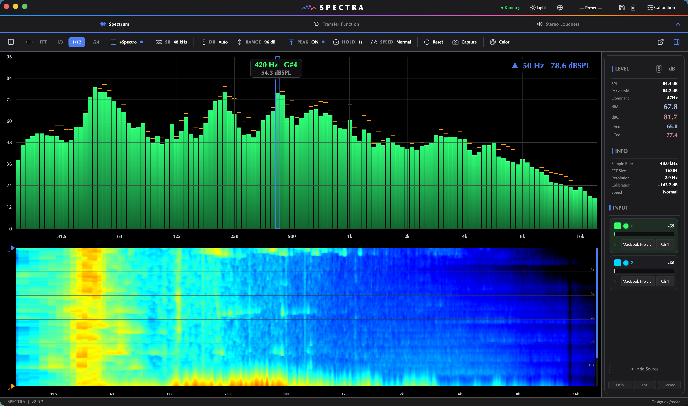
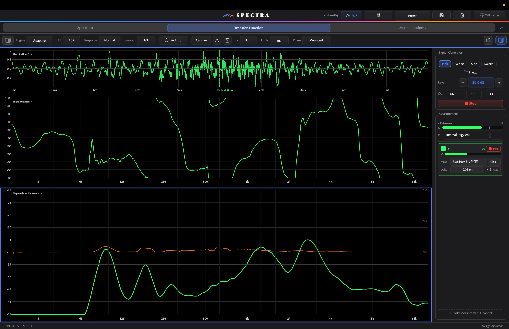
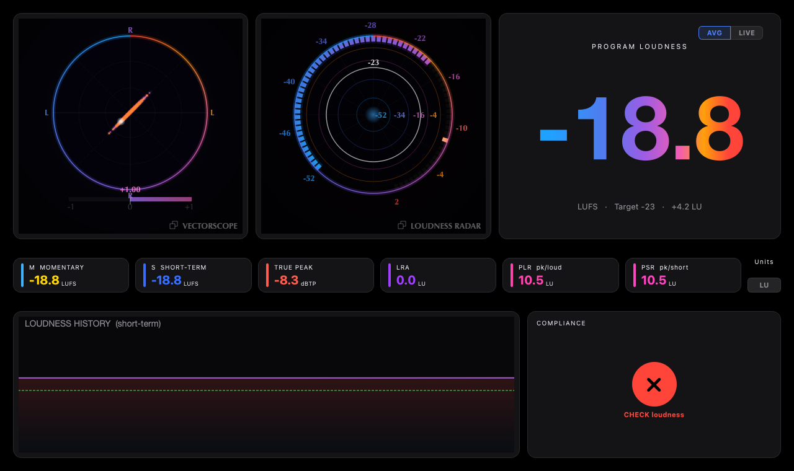
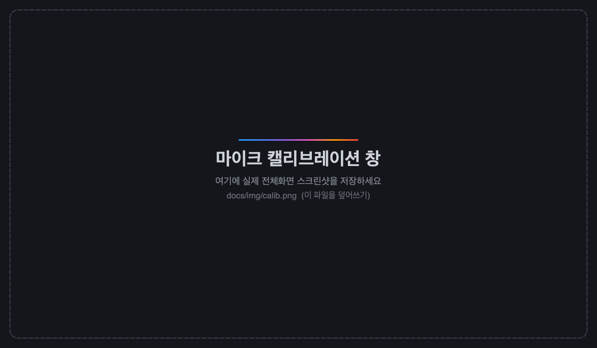
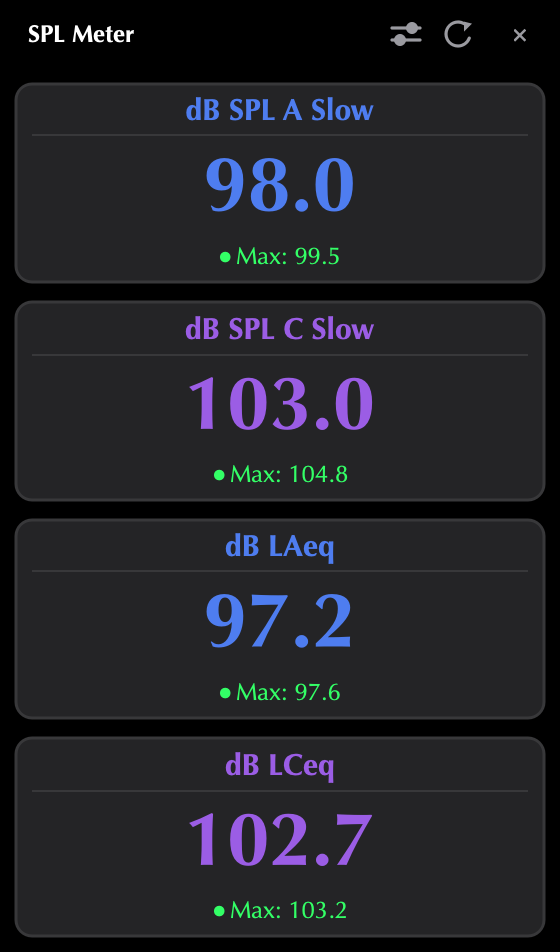
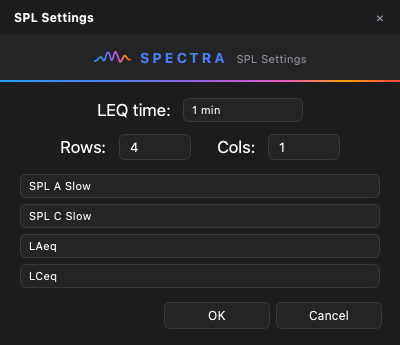
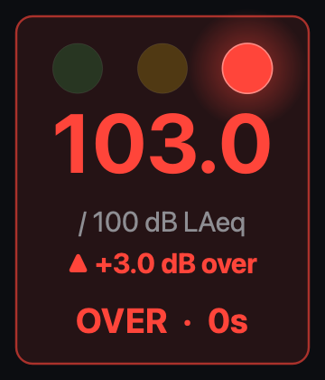
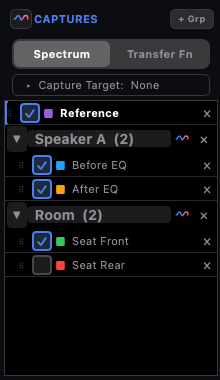
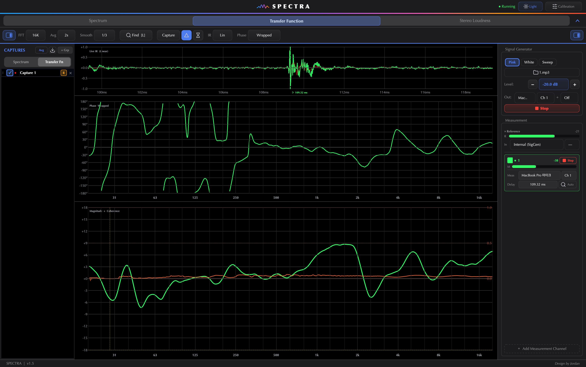

SPECTRA
이 설명서는 처음 쓰는 분도 따라 할 수 있게 만들었어요. 어려운 오디오 용어는 그때그때 쉬운 말로 풀어드릴게요. 순서대로 읽으셔도 좋고, 왼쪽 목차에서 필요한 부분만 보셔도 됩니다. 각 화면 그림 아래에는 버튼마다 번호(①②③)를 붙여 "이 버튼이 무슨 일을 하는지" 하나하나 설명해 두었습니다.
1SPECTRA가 뭐예요?
한마디로 — 소리를 눈으로 보는 도구입니다.
우리 귀에는 소리가 그냥 "크다 / 작다"로 들리지만, 사실 소리 안에는 낮은 음(저음)부터 높은 음(고음)까지 수많은 성분이 섞여 있어요. SPECTRA는 마이크나 오디오 신호를 받아서 어느 음이 얼마나 크게 들어있는지를 실시간 그래프로 보여줍니다.
3개의 탭으로 나뉘어 있어요. 각각 다른 일을 합니다:
| 탭 | 한 줄 설명 | 이럴 때 써요 |
|---|---|---|
| Spectrum | 지금 들어오는 소리의 주파수 분석 | "이 소리에 저음/고음이 얼마나 있나?" |
| Transfer Function | 스피커·방이 소리를 어떻게 바꾸는지 측정 | "이 스피커/방의 음향 특성은?" |
| Stereo Loudness | 좌우 스테레오 + 방송용 음량(LUFS) 측정 | "방송/음원 규격에 맞나?" |
2처음 시작하기
시스템 사양 (최소 요구사항)
| 항목 | 🍎 macOS | 🪟 Windows |
|---|---|---|
| 운영체제 | macOS 12 (Monterey) 이상 | Windows 10 이상 (64비트) |
| 프로세서 | Apple Silicon(M1 이상) 또는 Intel Mac | 64비트 CPU (Intel / AMD) |
| 메모리(RAM) | 4 GB 이상 (8 GB 권장) | |
| 오디오 | Core Audio 지원 장치 (내장 마이크 / USB 오디오 인터페이스) | WASAPI 지원 장치 (내장 마이크 / USB 오디오 인터페이스) |
| 디스플레이 | 1280 × 800 이상 권장 | |
| 저장 공간 | 약 200 MB | |
설치 — 🍎 macOS
설치 — 🪟 Windows
라이선스 활성화
처음 켜면 활성화 창이 나옵니다.
- 화면에 보이는 머신 ID를 복사해서 판매자에게 전달하세요. (이 PC 전용 ID예요)
- 받은 시리얼 키를 입력칸에 붙여넣고 활성화를 누르면 끝.
화면 한눈에 보기
- 메뉴바 — 맨 위(맥은 화면 최상단)의 View · Help 메뉴. 별도 창 띄우기·동시 보기·단축키·릴리즈 노트 등이 여기 있어요(4번).
- 헤더 — 가운데 SPECTRA 로고, 오른쪽에 줄지어: ☀️ Light / 🌙 Dark(밝은/어두운 화면 전환), 한 / EN(한국어 ↔ 영어, 누르면 재시작), — Preset — + 💾 + 🗑️(프리셋 — 아래 참고), Calibration(마이크 보정, 9번).
- 탭 줄 — Spectrum / Transfer Function / Stereo Loudness 3개 탭.
- 툴바 — 그 탭의 설정 버튼들이 한 줄로(▶ Start도 여기).
- 그래프 — 가운데 큰 영역. 여기에 소리가 그려져요.
- 우측 패널 — 레벨 수치(LEVEL), 정보(INFO), 입력 장치 선택(INPUT).
프리셋 (Preset) — 설정을 통째로 저장·불러오기
헤더의 — Preset — 드롭다운과 옆 💾 저장 · 🗑️ 삭제 아이콘은 세 탭(Spectrum·TF·Stereo)의 설정을 한 번에 저장하고 불러옵니다.
- 💾 저장 — 지금 설정을 이름 붙여 저장(같은 이름이면 덮어쓰기 확인).
- 드롭다운에서 선택 — 저장해 둔 프리셋을 고르면 세 탭 설정이 한 번에 적용돼요.
- 🗑️ 삭제 — 현재 선택된 프리셋 삭제.
3알아두면 좋은 기초 (1분 컷)
그래프를 읽으려면 이 3가지만 알면 돼요.
| 용어 | 쉽게 말하면 |
|---|---|
| 주파수 (Hz) | 음의 높낮이. 숫자가 작으면 저음(둥둥), 크면 고음(쨍). 그래프의 가로축이에요. (20Hz~20kHz가 사람 귀 범위) |
| 레벨 (dB) | 소리의 크기. 위로 갈수록 큼. 그래프의 세로축이에요. dB는 0에 가까울수록 크고, 음수(-60 등)로 갈수록 작아요. |
| dBSPL | 실제 공기 중 소음 크기(데시벨). 도서관 ~40, 대화 ~60, 콘서트 ~100. 정확히 보려면 마이크 캘리브레이션이 필요해요(9번). |
4공통 요소 — 메뉴바 · 트랜스포트 · 우측 패널
어느 탭에서나 똑같이 쓰는 부분이에요. 한 번만 익히면 됩니다.
docs/img/menubar.pngView·Help 메뉴를 펼친 모습 (맥 화면 최상단 메뉴바)View 메뉴 (보기)
| 항목 | 무엇 | 단축키 |
|---|---|---|
| SPL Meter | 큰 소음계 창 열기(10번) | — |
| SPL Alarm | 소음 한계 알람 창 열기(11번) | — |
| Spectrum in Separate Window | Spectrum 탭을 별도 창으로 분리 | ⌘⇧S |
| Transfer Function in Separate Window | TF 탭을 별도 창으로 분리 | ⌘⇧T |
| Stereo Loudness in Separate Window | Stereo 탭을 별도 창으로 분리 | ⌘⇧L |
| Split View (2 panes) | 두 탭을 좌우로 동시에 보기 | ⌘⇧2 |
Help 메뉴 (도움말)
| 항목 | 무엇 | 단축키 |
|---|---|---|
| About SPECTRA | 버전·머신 ID·라이선스 상태(14번) | — |
| Manual | 이 사용 설명서 열기 | ⌘? |
| Keyboard Shortcuts | 단축키 치트시트 띄우기 | ? |
| Release Notes | 버전별 변경 내용 보기 | — |
| Open Log Folder | 진단용 로그 폴더 열기(문의 시 첨부) | — |
| Quit SPECTRA | 종료 | ⌘Q |
▶ Start / ■ Stop (트랜스포트)
각 탭 툴바 왼쪽의 Start/Stop 버튼이 분석을 켜고 끕니다. S 키로도 토글돼요.
- ▶ Start — 로고 블루 + ▶ 아이콘. 누르면 분석 시작.
- ■ Stop — 빨강 + ■ 아이콘. 누르면 정지.
우측 패널 — LEVEL · INFO · INPUT
화면 오른쪽 세로 패널이에요. 툴바 맨 오른쪽 아이콘으로 접었다 펼 수 있습니다.
| 구역 | 보여주는 것 |
|---|---|
| LEVEL | 현재 SPL(소음 크기), Peak Hold(최고값), Dominant(가장 강한 주파수), dBA / dBC(사람 귀 보정 소음치), LAeq / LCeq(평균 소음). 헤더 우측의 두 아이콘으로 SPL 알람 창·SPL Meter 창을 띄울 수 있어요. |
| INFO | 현재 설정 정보 — 샘플레이트 · FFT 크기 · 해상도(Hz) · 캘리브 값 · 반응 속도. |
| INPUT | 분석할 장치와 채널 선택. 각 카드에 체크박스(표시 ON/OFF)·장치명·채널·레벨미터가 있어요. ＋ Add Source로 여러 장치/채널을 동시에 겹쳐 볼 수 있습니다(각 카드 색으로 구분). |
패널 맨 아래에는 Help · Log · License 작은 버튼 3개가 있어요(각각 설명서·로그 내보내기·About 창).
5창 분리 & 동시 보기
탭을 떼어내 별도 창으로 띄우거나, 두 탭을 한 화면에 나란히 볼 수 있어요. (듀얼 모니터에 좋아요)

탭을 별도 창으로 (팝아웃)
- View 메뉴에서 "○○ in Separate Window"를 고르거나, 단축키 ⌘⇧S(Spectrum)·⌘⇧T(TF)·⌘⇧L(Stereo)를 누르면 그 탭이 독립 창으로 떨어져요.
- 창은 본체와 따로 움직이고, 위치·크기를 기억합니다. 닫으면 다시 본체 탭으로 돌아와요.
- 오디오 엔진을 공유하므로 분리해도 측정은 그대로 흐릅니다.
동시 보기 (Split View)
View → Split View (2 panes) 또는 ⌘⇧2 — 화면을 좌우 2칸으로 나눠 서로 다른 탭을 동시에 봅니다. 예: 왼쪽 Transfer Function, 오른쪽 Spectrum.
벡터스코프 · 레이더 팝아웃
Stereo Loudness 탭의 벡터스코프와 라우드니스 레이더는 각 그림 모서리의 ↗ 아이콘으로 각각 별도 창으로 띄울 수 있어요(8번).
6Spectrum 탭 — 실시간 주파수 분석
지금 들어오는 소리에 어떤 음들이 얼마나 들어있는지 실시간으로 봅니다.

1 2 3 4 5 6 7 8 9툴바 버튼 — 번호별 설명
| # | 버튼 | 무엇 / 언제 |
|---|---|---|
| 1 | ▶ Start / ■ Stop | 분석 시작·정지(S). 왼쪽 드로어 토글 아이콘도 함께 있어요(캡쳐 목록 열기). |
| 2 | FFT / 1/3 / 1/12 / 1/24 | 뷰 모드. FFT=가장 정밀, 1/3·1/12·1/24=옥타브 밴드로 귀에 가깝게 묶어 보기(1/12 기본). |
| 3 | +Spectro | 스펙트로그램 추가. 시간에 따른 변화를 색 히트맵으로 아래로 흘려보여요. |
| 4 | Log / Lin | 가로축 눈금. Log=사람 귀처럼 저음을 넓게(추천), Lin=고르게. |
| 5 | SR | 샘플레이트(44.1 / 48 / 88.2 / 96 kHz). 보통 장치에 맞춰 그대로. |
| 6 | Avg | 평균(None / 4x / 8x / 16x). 곡선이 떨리면 올려서 부드럽게, 정밀히 보려면 낮게. |
| 7 | Peak (ON / Reset) | 피크 홀드. 지나간 최고값을 선으로 남겨요. Reset으로 지움. 옆 Hold로 유지 시간(Fast~1s) 설정. |
| 8 | Range / Speed / Color | Range=세로축 dB 폭(72/96/120dB), Speed=곡선 반응 속도, Color=곡선 색 변경. |
| 9 | Capture · ↗ · 패널 토글 | Capture=현재 곡선 박제(Space, 12번), ↗=Spectrum을 별도 창으로, 맨 끝 아이콘=우측 패널 접기/펴기. |
화면 읽는 법
가로축이 주파수(저음 왼쪽 → 고음 오른쪽), 세로축이 크기(dB)예요. 소리가 들어오면 울퉁불퉁한 곡선이 춤춥니다. 봉우리가 솟은 곳 = 그 음이 강한 것.
7Transfer Function 탭 — 스피커·방 음향 측정
스피커나 방이 소리를 "어떻게 바꾸는지"를 측정합니다. (전문 측정기와 같은 원리)

1 2 3 4 5 6툴바 버튼 — 번호별 설명
| # | 버튼 | 무엇 / 언제 |
|---|---|---|
| 1 | Engine (Single / Adaptive) | 측정 엔진 선택. Single=고정 FFT(가볍고 단순), Adaptive=주파수마다 해상도를 달리해 저역까지 촘촘하게(라이브 현장 튜닝 추천). 자세히는 아래 "엔진" 참고. |
| 2 | FFT | 분석 크기. 클수록 저역 분해능↑·반응↓. (Adaptive에서는 자동이라 비활성화) |
| 3 | Response(Avg) / Smooth | 반응 속도(평균 시간) — Fast(빠르고 민감)~Stable(느리고 안정). Smooth=곡선 매끄럽기. |
| 4 | IR Mode / Units | IR Mode=임펄스 응답 표시 방식, Units=딜레이 단위 ms / ms·m / m 전환(거리 환산, 음속 343 m/s). |
| 5 | Phase / △ Delta | Phase=위상 표시 방식(Wrapped/Unwrapped 등), △=기준 캡쳐 대비 차이(±dB)만 보기(12번). |
| 6 | 신호 발생기 · Ref / Meas 카드 | 오른쪽 패널. 측정 신호를 내보내고(아래 ①), 기준·측정 입력을 고릅니다(아래 ②). |
① 신호 발생기 (Signal Generator)
측정용 소리를 내보내는 부분이에요.
- Pink / White / Sine / Sweep — 측정 신호 종류.
- Pink(핑크 노이즈) — 일반 음향 측정용 "쉬익~" 소리(가장 많이 씀).
- White — 모든 주파수가 같은 에너지인 노이즈.
- Sine(사인파) — 단일 주파수 순음. 버튼을 누르면 주파수(10~24000Hz)를 정해요(예: "Sine 1k"). THD 같은 단일음 점검에 유용.
- Sweep — 저음→고음으로 훑는 신호. 정밀 측정·THD에 좋아요(아래 "엔진" 참고).
- File… — 직접 만든 음원 파일로 측정. 오디오 파일을 창에 끌어다 놓아도 바로 불러옵니다(WAV·FLAC·AIFF·MP3 등).
- Level — 내보내는 소리 크기. − / + 로 조절.
- Out — 어느 출력 채널로 내보낼지(다채널 인터페이스면 Out 3·4 등도 가능).
- ▶ Play (G) — 신호 재생/정지.
② 기준(Reference)과 측정(Measurement)
- Reference — "원본" 신호. 보통 Internal (SigGen)(방금 그 발생기 소리)로 둡니다.
- Measurement — 마이크로 받은 "실제" 소리. Meas에서 마이크 장치/채널을 고르세요. 각 카드에는 레벨바(초록≤−9 / 노랑 / 빨강>−3 dBFS)가 있어 입력 크기를 확인할 수 있어요.
- 측정 카드 추가 — 여러 지점을 동시에 측정/비교(각 색으로 구분).
③ 딜레이(Delay) 맞추기 — 중요!
마이크가 스피커에서 떨어져 있으면 소리가 조금 늦게 도착해요. 이 시간차를 맞춰줘야 정확한 측정이 됩니다.
= N.NN m로 나옵니다.④ 결과 그래프 3종
| 그래프 | 무엇을 보나 | 쉽게 |
|---|---|---|
| Live IR (임펄스 응답) | 소리가 도착하는 모양/시점 | 맨 위. 뾰족한 봉우리 = 소리가 도착한 순간. 딜레이 확인용. Ctrl++/−로 시간축 확대·축소. |
| Phase (위상) | 주파수별 타이밍 어긋남 | 가운데. 스피커 정렬·크로스오버 점검. |
| Magnitude + Coherence (크기 + 신뢰도) | 주파수별로 커졌나/작아졌나 + 그 측정이 믿을 만한가 | 맨 아래. 곡선이 평평하면 "착색 없이 고르게" = 좋음. 코히어런스는 0~1, 1에 가까울수록 신뢰도 높음. |
⑤ 측정 엔진 — Single vs Adaptive
v1.7부터 측정 방식을 고를 수 있어요. 툴바 Engine 콤보에서 바꿉니다(바꾸면 분석이 재시작돼요).
| 엔진 | 특징 | 이럴 때 |
|---|---|---|
| Single | 고정 크기 FFT 하나로 분석. 가볍고 단순. | 간단히 볼 때, 저사양에서. |
| Adaptive | 주파수 대역마다 분석 길이를 달리해 저역은 길게(촘촘히)·고역은 짧게(빠르게). 전 대역 고른 해상도. | 라이브 현장 튜닝 — 실시간으로 EQ 조정하며 볼 때(추천). |
⑥ TF 안에서 RTA(스펙트럼) 같이 보기
Transfer Function 탭에서도 RTA(실시간 옥타브/FFT 스펙트럼)를 함께 띄울 수 있어요. 측정 마이크 입력을 그대로 스펙트럼으로 보여줍니다 — 측정과 별개로 "지금 마이크에 뭐가 들어오나"를 확인할 때 좋아요.
⑦ 캡쳐 · Export
TF에서도 측정 곡선을 캡쳐해 비교하고, CSV + PNG로 내보낼 수 있어요. 자세한 건 12번 캡쳐를 보세요.
8Stereo Loudness 탭 — 스테레오 & 음량(LUFS)
좌우(L/R) 스테레오 상태와, 방송·음원에서 쓰는 "체감 음량"을 봅니다. (v1.7에서 새 디자인)

1 2 3 4 5화면 구성 — 번호별 설명
| # | 영역 | 무엇 |
|---|---|---|
| 1 | 벡터스코프 | 좌우 채널의 위상/이미지 관계. 모서리 ↗로 별도 창 가능. |
| 2 | 라우드니스 레이더 | 시간에 따른 음량을 원형으로. 모서리 ↗로 별도 창 가능. |
| 3 | PROGRAM (히어로) | 거대 그라디언트 숫자 = 통합 음량(Integrated). AVG/LIVE 토글로 누적평균↔실시간(단기) 전환. 아래에 목표·편차(LU) 표시. |
| 4 | 지표 칩 6개 | M / S / TP / LRA / PLR / PSR (아래 표 참고). |
| 5 | 히스토리 + 컴플라이언스 | 왼쪽=음량 시간 그래프(목표선 포함), 오른쪽=PASS / CHECK 합격 뱃지. |
왼쪽 — 벡터스코프 (Vectorscope)
좌우 채널의 위상/이미지 관계를 동그란 그림으로 보여줘요.
- 점들이 세로(위아래)로 모이면 — 좌우가 잘 맞는 좋은 스테레오.
- 가로로 퍼지면 — 좌우 위상이 어긋남(모노로 합치면 소리가 깨질 수 있음).
- 아래 상관도(+1 ~ −1) — +1=완벽히 같음(모노 안전), 0=넓은 스테레오, −1=위상 반전(주의).
가운데 — 라우드니스 레이더
시간에 따른 음량을 원형(레이더)으로 그려요. 방송 규격 맞출 때 핵심.
오른쪽 — PROGRAM (히어로 숫자)
가장 크게 보이는 그라디언트 숫자가 통합 음량(Integrated) = 처음부터 지금까지 전체 평균이에요. 규격과 비교하는 가장 중요한 값입니다.
- AVG / LIVE — AVG=누적 통합값(납품 기준), LIVE=실시간 단기값(작업 중 모니터).
- Target — 목표 음량 설정(상단). 숫자 아래에 목표 대비 편차(±LU)가 떠요.
- LU 토글 — 절대값(LUFS) ↔ 목표 기준 상대값(LU) 전환.
지표 칩 6개
| 지표 | 뜻 | 쉽게 |
|---|---|---|
| M (Momentary) | 순간 음량(~0.4초) | 지금 이 순간 얼마나 큰가 |
| S (Short-term) | 단기 음량(3초) | 최근 몇 초 평균 |
| TP (True Peak) | 실제 최고 피크(dBTP) | 클리핑(찌그러짐) 위험 체크. 보통 −1dBTP 이하 권장(넘으면 빨강). |
| LRA | 음량 범위(EBU 3342) | 조용한 곳과 큰 곳의 차이. 클수록 다이내믹(음악 5~15 LU). |
| PLR (pk/loud) | True Peak − Integrated | 전체 다이내믹 여유. 높을수록 다이내믹, 낮으면 강하게 압축된 마스터. |
| PSR (pk/short) | True Peak − Short-term | 순간 다이내믹/리미팅 강도. 낮으면 과도하게 눌린 상태. |
컴플라이언스 & 컨트롤
- COMPLIANCE 뱃지 — 목표 음량·트루피크 기준을 만족하면 ✓ PASS(초록), 벗어나면 ✗ CHECK(노랑/빨강)로 알려줘요.
- Target / 플랫폼 기준 — 방송 −23, 애플 −16, 스포티파이/유튜브 −14 등 목표를 정하면 레이더·히어로·컴플라이언스에 반영.
- Reset I / Reset TP — 통합 음량 / 트루피크 측정을 초기화(새 곡·새 세션 시작 시).
- L · R — 좌/우로 쓸 입력 채널 지정.
9마이크 캘리브레이션 (정확한 소음 측정)
화면의 dBSPL 숫자를 실제와 똑같이 맞추는 작업입니다.
마이크마다 감도가 달라서, 보정을 안 하면 화면 숫자가 실제 소음과 다를 수 있어요. 캘리브레이터(기준기)가 있으면 정확히 맞출 수 있습니다.

- 채널 목록 — 다채널 인터페이스면 채널마다 따로 보정. 채널을 고른 뒤 각각 측정하면 설정값이 채널별로 저장돼요.
- Applied Offset — 자동 계산값을 수동으로 미세 조정할 수 있어요. Reset으로 해당 채널 보정 초기화.
10SPL Meter (큰 소음계 창)
멀리서도 보이는 큰 숫자 소음계를 별도 창으로 띄웁니다.
View 메뉴 → SPL Meter, 또는 LEVEL 패널 헤더의 ↗ 아이콘으로 열려요. 공연장에서 객석 소음을 모니터하거나, 측정값을 크게 띄워둘 때 좋아요. SPL 미터가 따로 열려 있지 않아도 측정은 백그라운드에서 계속됩니다.

- 핀(고정) 버튼 — 항상 다른 창 위에 떠 있게(always-on-top). 마우스를 떼면 타이틀바가 숨어 숫자판만 꽉 차요(글랜스 모드).
- Reset Max — 각 칸의 최고값 기록 초기화.
- 창 크기는 자유롭게 늘리거나 줄일 수 있고, 글자도 따라 커집니다(Smaart식 스케일).
⚙️ SPL 설정 창 — 화면 구성 바꾸기
창 오른쪽 위 ⚙️ 아이콘을 누르면 SPL 설정 창이 열려요. 여기서 소음계를 내 마음대로 배치할 수 있습니다.

- 측정 소스 — 어느 입력(primary 또는 추가한 소스 카드)을 SPL로 잴지 선택.
- LEQ time — 평균값(LAeq·LCeq)을 낼 시간(1분 ~ 3시간). 예: 3 hr=3시간 평균 소음(공연·행사 누적 측정에 유용).
- 행(Row) · 열(Col) — 숫자판을 몇 칸으로 나눌지(최대 4×4).
- 각 칸 지표 선택 — 칸마다 보여줄 값: dB SPL A/C Slow·Fast, dBA·dBC, LAeq·LCeq(평균), Peak·Peak C·dBFS Peak, Clock(시계) 등. 안 쓸 칸은 "— 없음"으로.
- 다 고른 뒤 OK를 누르면 바로 반영돼요.
11SPL 알람 창 (소음 한계 알람)
소음이 정해둔 한계에 가까워지거나 넘으면 신호등 색으로 알려주는 독립 창이에요.
View 메뉴 → SPL Alarm, 또는 LEVEL 패널 헤더의 알람 아이콘으로 열립니다. 공연장 FOH에서 멀찍이 띄워두고 "지금 한계 안인가?"를 한눈에 보는 용도예요. SPL 미터와 무관한 완전 독립 창이라 미터를 안 켜도 동작합니다.

- 신호등 색 — 초록(여유) → 노랑(한계 −N dB 접근) → 빨강(초과, 깜빡임 + "N초째").
- 거대 숫자 — 선택한 지표 값 / 한계, 그 아래 ▼여유 또는 ▲초과.
- 창 크기에 맞춰 글자가 커지고, 핀(고정)으로 항상 위에, 마우스를 떼면 카드만 꽉 차요(글랜스).
⚙️ 알람 설정
타이틀바 ⚙️로 설정 창을 엽니다.
- 마스터 지표 — 무엇을 기준으로 알람할지(LAeq · LCeq · dBA · dBC · SPL · Peak 등).
- 한계(Limit) — 빨강이 되는 기준값(예: 100 dBA).
- 노랑 여유(Amber headroom) — 한계 몇 dB 전부터 노랑으로 경고할지(예: −3 dB).
- LEQ time — LEQ 지표일 때 평균 시간.
12캡쳐로 비교하기 (Capture)
지금 보이는 곡선을 그대로 박제해서, 나중 측정과 겹쳐 비교하는 기능이에요.
"캡쳐"는 화면 사진(스크린샷)이 아니에요. 현재 그래프를 색깔 있는 고정 곡선으로 저장해 두면, 그 위로 지금 들어오는 소리(라이브)가 계속 그려져요. 그래서 "전 vs 후", "스피커 A vs B", "이 자리 vs 저 자리"를 한눈에 비교할 수 있습니다. Spectrum·Transfer Function 탭에서 쓸 수 있어요.

캡쳐하는 법
- Capture 버튼 또는 Space — 현재 곡선을 박제. (Spectrum은 이름을 묻고, TF는 자동 이름으로 빠르게 저장.) 저장되면 ✓ Captured 표시가 잠깐 떠요.
- 캡쳐마다 다른 색이 자동 배정되고(라이브 색과 안 겹치게), 목록(서랍)에서 확인·표시 ON/OFF·삭제할 수 있어요.
- 재캡쳐(Recapture, R) — 기존 캡쳐의 색·이름·그룹은 그대로 두고 곡선 데이터만 현재 라이브로 덮어써요(제자리 다시 찍기). 행 우클릭 메뉴에도 있어요.
목록 정리 — 일괄 토글 · 그룹 · Delete All
- 전체 표시/숨김 토글 — 목록 제목 옆 웨이브 아이콘으로 모든 캡쳐를 한 번에 켜고 꺼요. 그룹마다도 토글 가능.
- 그룹 — ＋ Grp로 그룹을 만들고, 그룹 헤더 이름을 클릭하면 새 캡쳐가 그 그룹으로 들어가요(◉ 하이라이트). 화살표로 접기.
- Delete All — 행/빈 공간 우클릭 → 현재 탭의 캡쳐 전체 삭제(확인 후).
TF 캡쳐 — 내보내기 (CSV + PNG)
Transfer Function 탭에서는 캡쳐한 측정값을 파일로 내보낼 수 있어요. 툴바의 Export 버튼을 누르고 폴더를 고르면:
- CSV 파일 — 주파수별 크기(dB)·위상·코히런스 숫자 데이터. 엑셀·보고서용. (
tf_captures_날짜.csv) - PNG 그림 — 그래프 이미지. (
tf_이름_날짜.png)
TF — △ Delta · ⧗ 안정화 캡쳐
- △ Delta 비교 — 곡선을 기준 대비 차이(Δ)로 표시. ① 캡쳐 목록에서 기준 캡쳐의 R 버튼으로 기준(Reference) 지정 → ② △를 켜면 나머지 곡선이 그 기준에서 얼마나 달라졌는지(±dB)만 보여요. "보정 전→후", "A 자리→B 자리" 차이 볼 때. (기준 미지정이면 동작 안 함)
- ⧗ 안정화 캡쳐 — 바로 찍지 않고 측정이 안정될 때까지(평균·코히런스, 최대 5초) 기다렸다 깨끗한 한 장을 자동 캡쳐. "Stabilizing…" 표시 후 저장돼요. (5초 내 안정 안 되면 알리고 그대로 캡쳐 — 주변 소음↓·신호 레벨↑로 개선)

13단축키
| 키 | 기능 |
|---|---|
| Space | 현재 곡선 캡쳐(박제해서 비교) — Spectrum·TF |
| R | 선택한 캡쳐 재캡쳐(제자리 다시 찍기) — Spectrum·TF |
| S | 분석 시작/정지(Start·Stop) |
| L | (Transfer Function) 딜레이 자동 찾기 = Find/Auto |
| G | (Transfer Function) 신호 발생기 재생/정지 |
| ↑ ↓ | 그래프 dB 범위 위/아래로 이동 — Spectrum·TF |
| ← → | (TF) 캡쳐 선택 이동 |
| Ctrl++ / Ctrl+− | (TF) 임펄스 응답(IR) 시간축 확대/축소 |
| ⌘⇧S / ⌘⇧T / ⌘⇧L | Spectrum / TF / Stereo 탭을 별도 창으로 |
| ⌘⇧2 | 동시 보기(Split View) 토글 |
| ? | 단축키 치트시트 / ⌘? 설명서 열기 |
| ⌘Q | 종료 |
14라이선스 · About · 릴리즈 노트 · 로그
우측 아래 License 버튼(또는 Help → About SPECTRA)을 누르면 About SPECTRA 창이 열려요 — 버전, 머신 ID, 라이선스 상태, 로그 위치를 볼 수 있고 Copy Machine ID로 머신 ID를 복사할 수 있습니다.
- Release Notes (Help 메뉴) — 버전별 변경 내용을 브랜드 창으로 봅니다.
- Open Log Folder (Help 메뉴) / 패널의 Log 버튼 — 문제 발생 시 진단용 기록 파일을 엽니다(문의할 때 함께 보내면 좋아요).
15문제 해결
| 증상 | 해결 |
|---|---|
| 그래프가 안 움직여요 | ① 왼쪽 위 ▶ Start를 눌렀는지 ② 우측 INPUT에서 올바른 장치/채널을 골랐는지 확인. |
| 장치(마이크)가 목록에 없어요 | 케이블 연결 후, 장치 선택 콤보를 다시 열어보세요. USB는 뽑았다 끼우면 자동으로 다시 잡습니다. |
| USB 인터페이스를 뽑았더니 멈췄어요 | 다시 꽂으면 자동 복구됩니다. 안 되면 장치를 다시 선택하세요. |
| 소음(dBSPL) 숫자가 실제와 달라요 | 마이크 캘리브레이션(9번)을 하세요. |
| Transfer Function 결과가 이상/불안정 | 신호를 재생하고 Auto(딜레이, L)를 먼저 맞추세요. 코히어런스가 낮은 구간은 신뢰하지 마세요(주변 소음↓, 신호 레벨↑). 라이브엔 Adaptive 엔진, 정밀엔 Sweep를 권장. |
| 매그니튜드 곡선이 화면 밖(아래)에 있어요 | 마이크 입력 레벨이 낮아서예요. 그래프를 더블클릭하면 자동으로 맞춰지고, 인터페이스에서 마이크 게인을 올리면 0dB 쪽으로 올라옵니다. |
| 별도 창/미터가 전체화면에서 안 보여요 | 최신 버전에서 전체화면 위로 정상 표시되도록 처리됐어요. 그래도 안 보이면 본 창을 잠깐 일반 화면으로 했다 다시 시도하세요. |
| 라우드니스(LUFS)가 부정확해요 | 아날로그 입력은 절대 LUFS를 위해 게인 캘리브가 필요해요. 96kHz는 K-가중 보정이 제한적이라 48/44.1kHz 권장. |